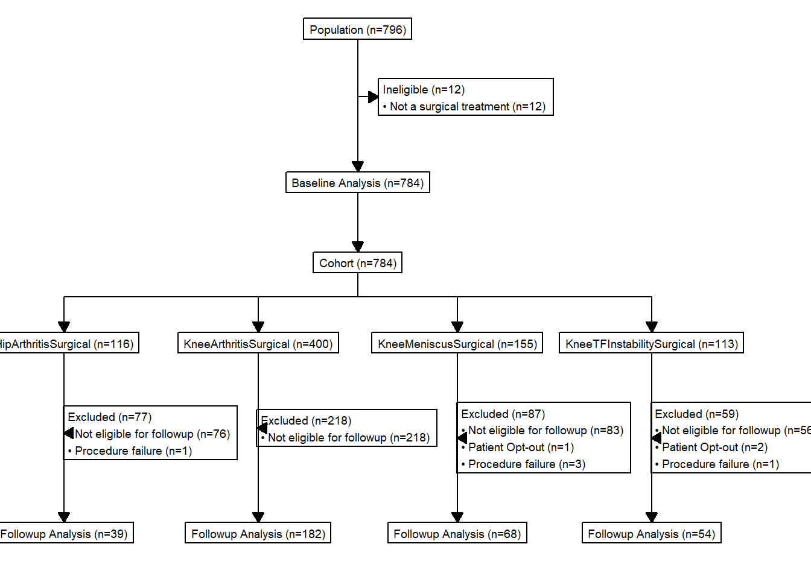
OrthoCompass_Review
1 Preamble
The following analysis is a report on the activity, quality and data contained in the OrthoCompass system in preparation for a pull to the PROPELLER Registry.
Analysis packages were loaded initially into the R environment.
Access to the OrthoCompass datasets was pre-authorised.
A function was generated to retrieve files using the googledrive package, to call on later in the analysis for processing data imports.
Data was retrieved from live database tables. Source files were specified and stored as global variables to call on in further functions.
A static registry snapshot was retrieved and formatted based on the fixed date of preparation of the snapshot (31-Mar-2025).
2 Context
OrthoCompass is is a clinical support system embedded within the practices of two surgeons in South-East Queensland. It has been in operation since July 2024 and has multiple cohorts across hip, knee and lower limb pathology, excluding foot and ankle.
3 Recruitment Flow by Region
Flowcharts as per STROBE [@Vandenbroucke2007] and RECORD [@Benchimol2015] guidelines were generated for treatments enrolled into the Registry. Followup was set to eligibility at 6months.
Identify most populated cohorts for visualisation
Cumulative recruitment over time was plotted from Registry inception to the present.
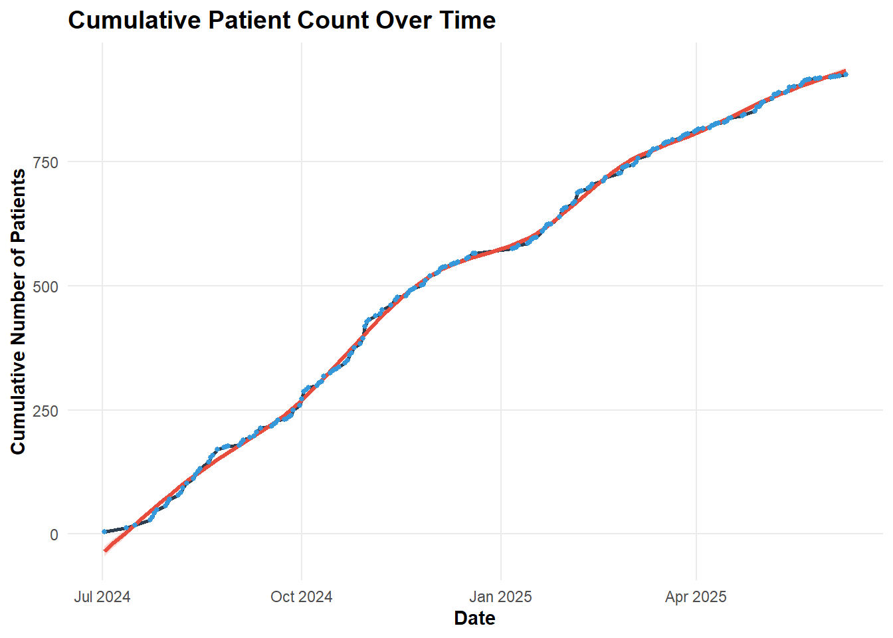
4 Missingness and Compliance
4.1 Baseline and Intraoperative
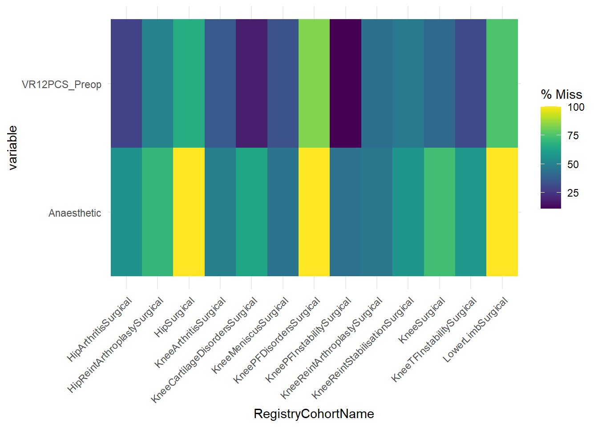
Missingness for baseline PROMs (represented by VR12) and intraoperative data is captured in Figure 3.
Overall, there are variable response rates for baseline scores across cohorts. This may reflect variable engagement during consultant clinics.
4.2 Patient-reported Outcomes by TimePoint
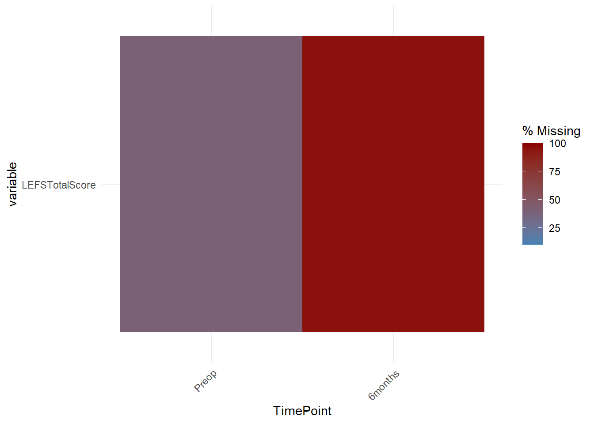
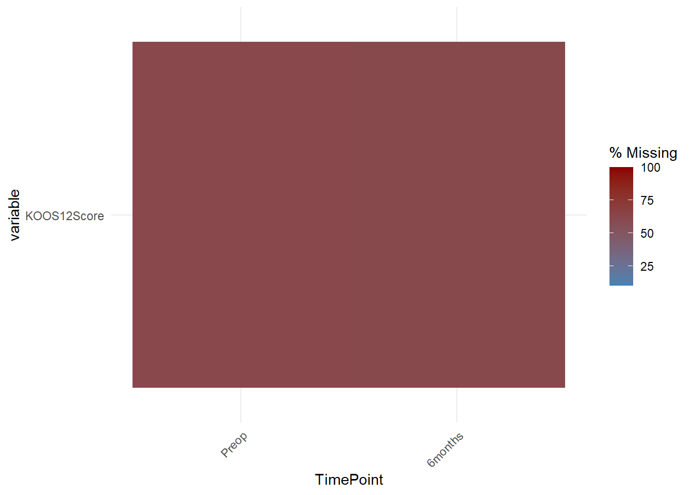
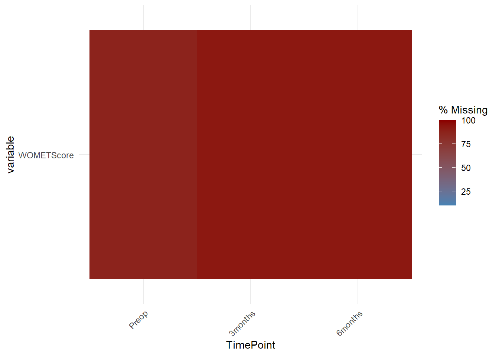
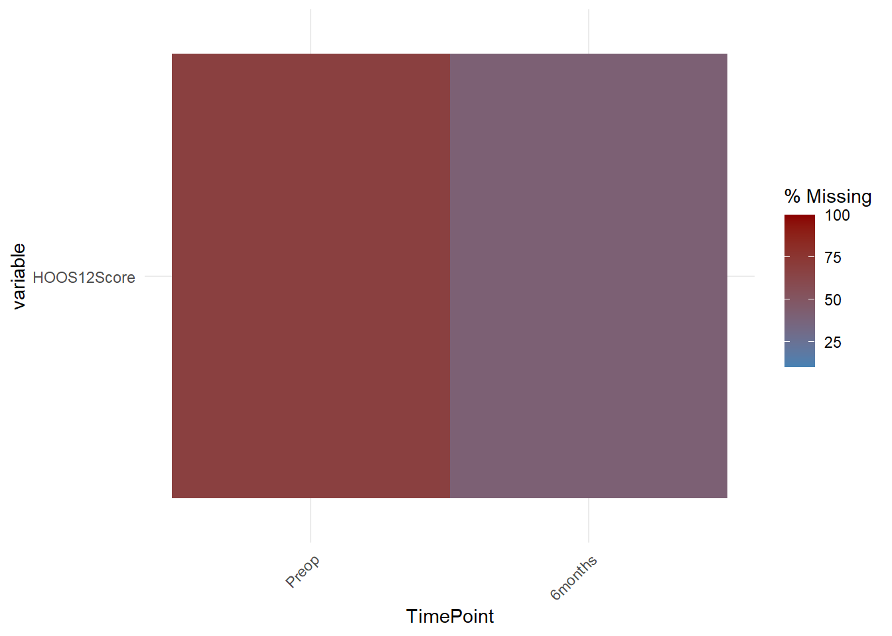
The cumulative results of the Registry illustrate difficulty in engaging patients beyond short term followup.
4.3 Baseline by Year
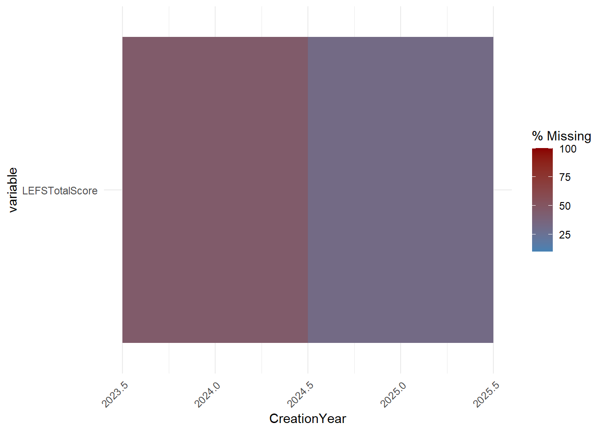
5 Cohort Analysis
The VR12 is a general health questionnaire that is presented to all patients enrolled in the registry.
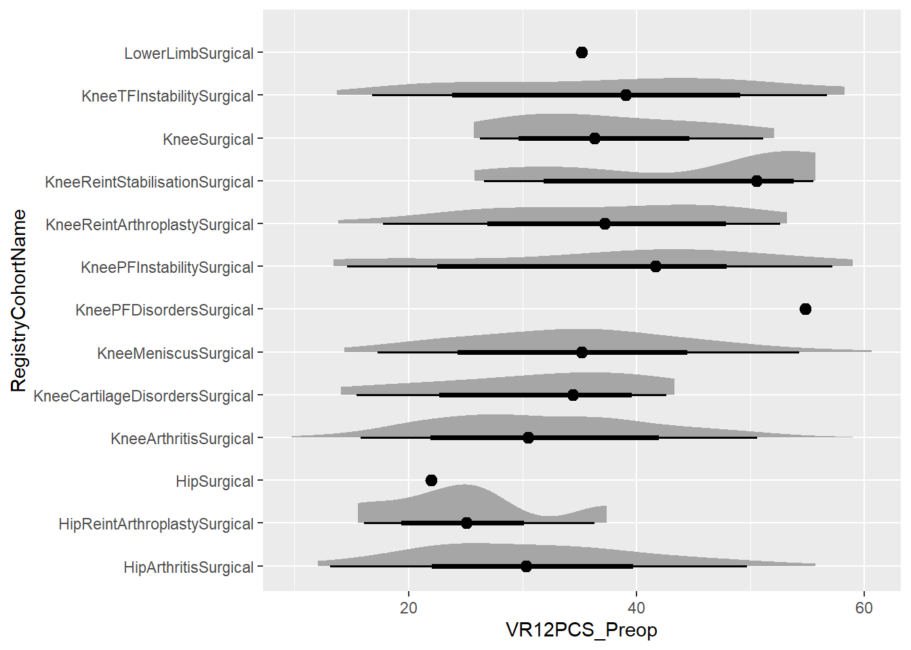
Between-cohort variability is observed for the Physical Component Score of the VR12, but not as pronounced for the Mental Component Score. Most notable is the high variation within all cohorts for both VR12 component scores.
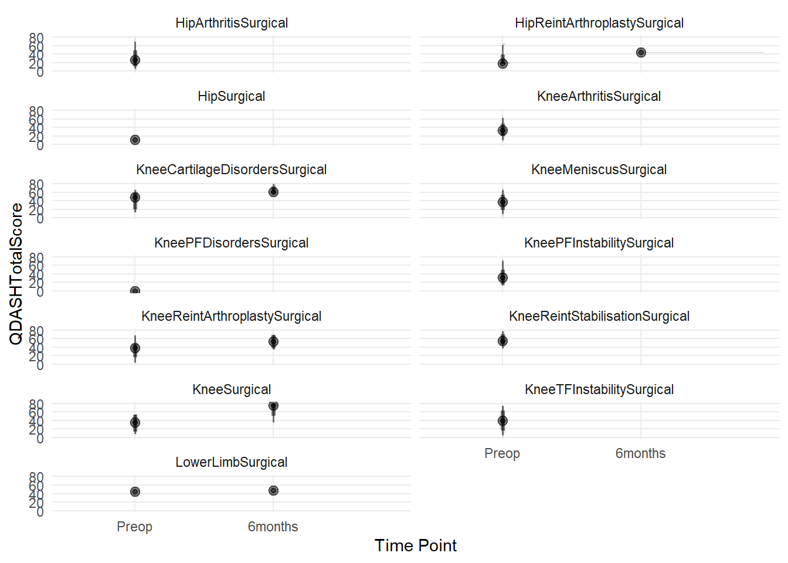
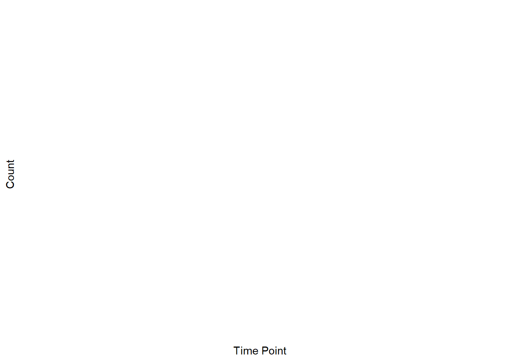
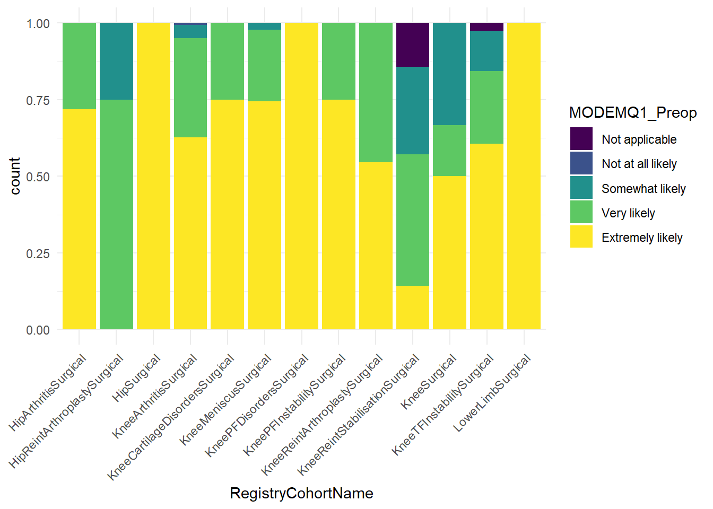
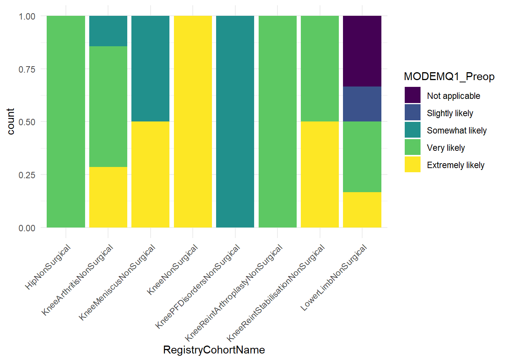
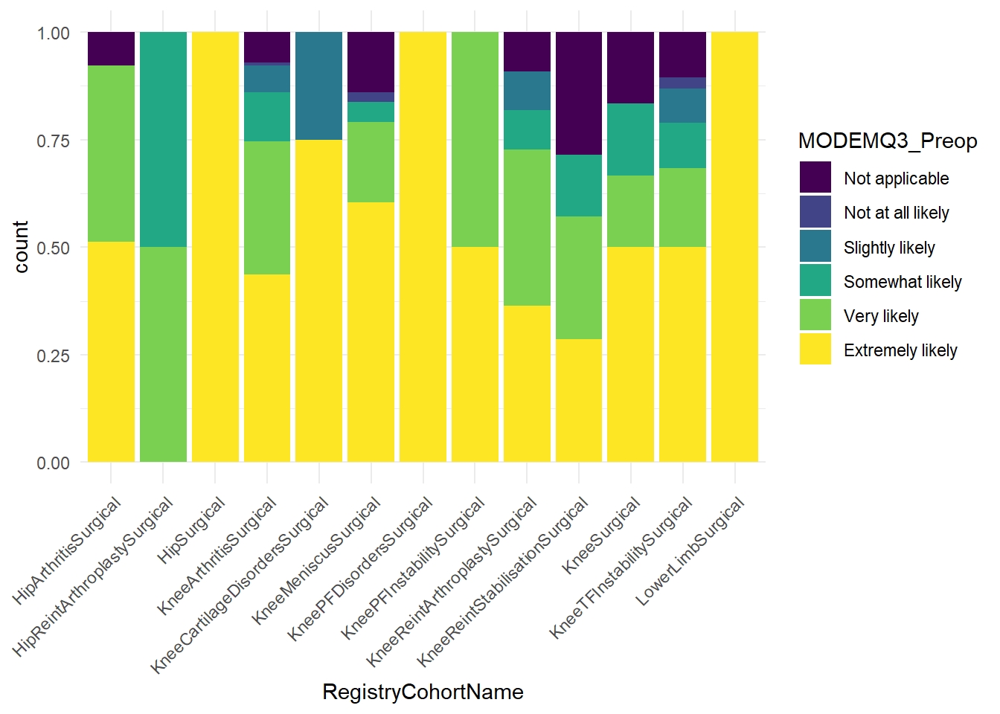
5.1 Knee Arthritis
| Characteristic | Non-Surgical N = 4491 |
Surgical N = 4001 |
|---|---|---|
| TreatmentType | ||
| Primary | 447 (100%) | 400 (100%) |
| Revision Else | 2 (0.4%) | 0 (0%) |
| TreatmentStatus | ||
| Failed | 13 (2.9%) | 0 (0%) |
| No further followup | 12 (2.7%) | 0 (0%) |
| Ongoing | 418 (93%) | 321 (80%) |
| Pending: Initial Consult | 0 (0%) | 1 (0.3%) |
| Pending: Offer of treatment | 4 (0.9%) | 0 (0%) |
| Pending: Treatment | 2 (0.4%) | 78 (20%) |
| DateInitialExamination | 2024-06-06 - 2025-06-23 | 2021-05-16 - 2025-11-21 |
| AgeAtInitialExam | 65 (58, 73) | 69 (62, 75) |
| Sex | ||
| F | 84 (19%) | 86 (22%) |
| Female | 137 (31%) | 103 (26%) |
| M | 61 (14%) | 96 (24%) |
| Male | 167 (37%) | 115 (29%) |
| 1 n (%); Min - Max; Median (Q1, Q3) | ||
Prepare intraop variables for display
| Characteristic | DLiuOrtho N = 1811 |
MFacekOrtho N = 1571 |
|---|---|---|
| MissIntraOp | ||
| Attempted | 129 (71%) | 73 (46%) |
| Missing | 52 (29%) | 84 (54%) |
| ArthroplastyTreatmentKnee | 129 (100%) | 72 (100%) |
| ArthroplastyTypeKnee | ||
| Total | 106 (82%) | 71 (99%) |
| Unicompartmental | 23 (18%) | 1 (1.4%) |
| DVTProphylaxisProvided | 128 (99%) | 73 (100%) |
| AnalgesiaProvided | 129 (100%) | 73 (100%) |
| AbxProphylaxisProvided | 129 (100%) | 73 (100%) |
| DVTProphylaxisStandardProtocol | 115 (90%) | 72 (99%) |
| AnalgesiaStandardProtocol | 129 (100%) | 73 (100%) |
| AbxProphylaxisStandardProtocol | 129 (100%) | 71 (97%) |
| DVTProphylaxisNonStandardProtocolDetails | ||
| Apixiban | 6 (46%) | 0 (0%) |
| continue usual aspirin, add clexane whilst inpatient | 0 (0%) | 1 (100%) |
| IVC filter and rivaroxaban | 1 (7.7%) | 0 (0%) |
| Rivaroxaban | 6 (46%) | 0 (0%) |
| DVTProphylaxisNonStandardProtocolDosage | ||
| 0 | 0 (0%) | 1 (100%) |
| 10 | 1 (7.7%) | 0 (0%) |
| 2.5 | 1 (7.7%) | 0 (0%) |
| 20 | 6 (46%) | 0 (0%) |
| 5 | 5 (38%) | 0 (0%) |
| DVTProphylaxisNonStandardProtocolDuration | ||
| 0 | 0 (0%) | 1 (100%) |
| 12 | 1 (7.7%) | 0 (0%) |
| 52 | 11 (85%) | 0 (0%) |
| 54 | 1 (7.7%) | 0 (0%) |
| TourniquetUse | ||
| Intermittent | 22 (17%) | 0 (0%) |
| Not used | 107 (83%) | 72 (99%) |
| Released before closure | 0 (0%) | 1 (1.4%) |
| TourniquetDuration | 20.0 (20.0, 23.0) | 9.0 (9.0, 9.0) |
| Anaesthetic | ||
| General | 0 (0%) | 1 (1.4%) |
| General; Local anaesthetic infiltration | 8 (6.2%) | 24 (33%) |
| General; Regional block - Adductor Canal; Local anaesthetic infiltration | 8 (6.2%) | 0 (0%) |
| General; Spinal | 1 (0.8%) | 9 (12%) |
| General; Spinal; Local anaesthetic infiltration | 26 (20%) | 39 (53%) |
| General; Spinal; Regional block - Adductor Canal; Local anaesthetic infiltration | 31 (24%) | 0 (0%) |
| General; Spinal; Regional block - Adductor Canal; Regional block - iPACK; Local anaesthetic infiltration | 14 (11%) | 0 (0%) |
| Spinal; Sedation; Local anaesthetic infiltration | 32 (25%) | 0 (0%) |
| Spinal; Sedation; Regional block - Adductor Canal; Local anaesthetic infiltration | 9 (7.0%) | 0 (0%) |
| LARopivacaine | 128 (100%) | 45 (71%) |
| LANaropin | 0 (0%) | 13 (21%) |
| LATXA | 118 (92%) | 0 (0%) |
| TranexamicAcid | ||
| Intravenous | 128 (99%) | 64 (88%) |
| Not used | 0 (0%) | 1 (1.4%) |
| Topical | 1 (0.8%) | 8 (11%) |
| ApproachMedialParapatellar | ||
| Limited | Mini | 20 (16%) | 0 (0%) |
| Standard | 109 (84%) | 65 (100%) |
| SoftTissueReleaseMedialKnee | ||
| Extensive | 15 (12%) | 1 (1.4%) |
| Minimal | 85 (66%) | 36 (50%) |
| None | 29 (22%) | 35 (49%) |
| SoftTissueReleaseLateralKnee | ||
| Extensive | 1 (0.8%) | 0 (0%) |
| Minimal | 5 (3.9%) | 13 (18%) |
| None | 123 (95%) | 59 (82%) |
| SoftTissueReleasePosteriorKnee | ||
| Extensive | 11 (8.5%) | 1 (1.4%) |
| Minimal | 7 (5.4%) | 9 (13%) |
| None | 111 (86%) | 62 (86%) |
| SoftTissueReleaseAnteriorKnee | ||
| Minimal | 0 (0%) | 1 (1.4%) |
| None | 129 (100%) | 71 (99%) |
| ArthroplastyProcedureMedialTibiofemoral | 23 (100%) | 1 (100%) |
| FemurImplantKneeManufacturer2 | ||
| Depuy | 128 (99%) | 0 (0%) |
| Stryker | 1 (0.8%) | 71 (100%) |
| TibiaImplantKneeManufacturer2 | ||
| Depuy | 128 (99%) | 0 (0%) |
| Stryker | 1 (0.8%) | 71 (100%) |
| ComponentSizeFemoral_ordinal | ||
| 2 | 4 (3.1%) | 1 (1.4%) |
| 3 | 8 (6.2%) | 14 (19%) |
| 4 | 9 (7.0%) | 14 (19%) |
| 5 | 27 (21%) | 14 (19%) |
| 6 | 20 (16%) | 23 (32%) |
| 7 | 26 (20%) | 6 (8.3%) |
| 8 | 18 (14%) | 0 (0%) |
| 9 | 13 (10%) | 0 (0%) |
| 10 | 4 (3.1%) | 0 (0%) |
| ComponentSizeTibial_ordinal | ||
| 1 | 1 (0.8%) | 0 (0%) |
| 2 | 7 (5.4%) | 2 (2.8%) |
| 3 | 12 (9.3%) | 11 (15%) |
| 4 | 20 (16%) | 14 (19%) |
| 5 | 23 (18%) | 10 (14%) |
| 6 | 12 (9.3%) | 23 (32%) |
| 7 | 21 (16%) | 12 (17%) |
| 8 | 22 (17%) | 0 (0%) |
| 9 | 10 (7.8%) | 0 (0%) |
| 10 | 1 (0.8%) | 0 (0%) |
| ComponentSizeInsert_ordinal | ||
| 5 | 58 (45%) | 0 (0%) |
| 6 | 43 (33%) | 1 (1.4%) |
| 7 | 20 (16%) | 0 (0%) |
| 8 | 8 (6.2%) | 0 (0%) |
| 9 | 0 (0%) | 13 (18%) |
| 10 | 0 (0%) | 37 (51%) |
| 11 | 0 (0%) | 21 (29%) |
| ProsthesisConstraint | ||
| Cruciate retaining | 1 (0.9%) | 61 (86%) |
| Cruciate sacrificing | 105 (99%) | 10 (14%) |
| BearingTypeKnee | ||
| Fixed | 23 (18%) | 72 (100%) |
| Medial Pivot | 1 (0.8%) | 0 (0%) |
| Rotating | 105 (81%) | 0 (0%) |
| 1 n (%); Median (Q1, Q3) | ||
| Characteristic | N = 4001 |
|---|---|
| Subsequent Surgery | 2 (1.2%) |
| ED Visit | 11 (6.9%) |
| Non-Surgeon Healthcare | 29 (20%) |
| Unplanned Surgeon Followup | 2 (1.7%) |
| Change in Overall Health | 23 (20%) |
| Pain | 32 (13, 48) |
| Stiffness | 39 (19, 54) |
| Instability | 15 (4, 42) |
| Loss of Alignment | Shape | 4 (1, 14) |
| Loss of Feeling | 12 (3, 25) |
| Loss of Control | Weakness | 12 (2, 31) |
| Hardware Irritation | 2 (0, 9) |
| Event Flag | 141 (87%) |
| 1 n (%); Median (Q1, Q3) | |
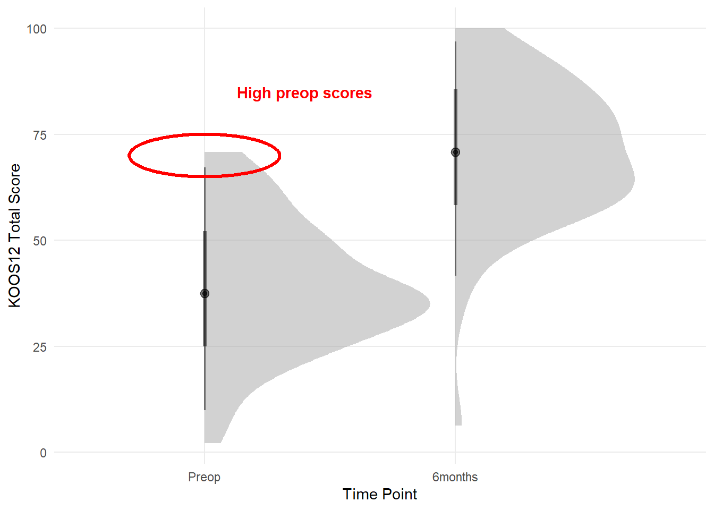
5.2 Hip Arthritis
| Characteristic | Non-Surgical N = 581 |
Surgical N = 1161 |
|---|---|---|
| TreatmentType | ||
| Primary | 58 (100%) | 116 (100%) |
| TreatmentStatus | ||
| Failed | 1 (1.7%) | 1 (0.9%) |
| No further followup | 4 (6.9%) | 0 (0%) |
| Ongoing | 53 (91%) | 80 (69%) |
| Pending: Offer of treatment | 0 (0%) | 1 (0.9%) |
| Pending: Treatment | 0 (0%) | 34 (29%) |
| DateInitialExamination | 2024-02-06 - 2025-05-29 | 2023-05-15 - 2025-06-02 |
| AgeAtInitialExam | 67 (62, 75) | 69 (62, 76) |
| Sex | ||
| Female | 27 (47%) | 56 (48%) |
| Male | 31 (53%) | 60 (52%) |
| ComorbScore_Preop | 3.00 (1.00, 4.50) | 3.00 (1.00, 4.00) |
| 1 n (%); Min - Max; Median (Q1, Q3) | ||
Prepare intraop variables for display
| Characteristic | DLiuOrtho N = 911 |
|---|---|
| MissIntraOp | |
| Attempted | 51 (56%) |
| Missing | 40 (44%) |
| DVTProphylaxisProvided | |
| Yes | 51 (100%) |
| AnalgesiaProvided | |
| Yes | 51 (100%) |
| AbxProphylaxisProvided | |
| Yes | 51 (100%) |
| DVTProphylaxisStandardProtocol | 46 (90%) |
| AnalgesiaStandardProtocol | |
| Yes | 51 (100%) |
| AbxProphylaxisStandardProtocol | |
| Yes | 51 (100%) |
| DVTProphylaxisNonStandardProtocolDetails | |
| Apixiban | 2 (40%) |
| Rivaroxaban | 3 (60%) |
| DVTProphylaxisNonStandardProtocolDosage | |
| 10 | 1 (20%) |
| 20 | 2 (40%) |
| 5 | 2 (40%) |
| DVTProphylaxisNonStandardProtocolDuration | |
| 52 | 5 (100%) |
| TourniquetUse | |
| Not used | 51 (100%) |
| Anaesthetic | |
| General; Local anaesthetic infiltration | 24 (47%) |
| General; Spinal; Local anaesthetic infiltration | 20 (39%) |
| Spinal; Sedation; Local anaesthetic infiltration | 7 (14%) |
| LocalInfiltrationComposition | |
| Ropivacaine 0.75% with tranexamic acid 2 grams and 50mls normal saline | 13 (25%) |
| Ropivicaine 0.25% with 2 grams tranexamic acid and 50mls normal saline | 1 (2.0%) |
| Ropivicaine 0.75% 40mls with tranexamic acid 2 grams and 60ml normal saline | 7 (14%) |
| Ropivicaine 0.75% with 2 grams tranexamic acid and 100mls normal saline | 2 (3.9%) |
| Ropivicaine 0.75% with 2 grams tranexamic acid and 50ml normal saline | 2 (3.9%) |
| Ropivicaine 0.75% with 2 grams tranexamic acid and 50mls normal saline | 2 (3.9%) |
| Ropivicaine 0.75% with 2 grams tranexamic acid with 50mls normal saline | 1 (2.0%) |
| Ropivicaine 0.75% with tranexamic acid 2 grams and 100mls normal saline | 5 (9.8%) |
| Ropivicaine 0.75% with tranexamic acid 2 grams and 50mls normal saline | 17 (33%) |
| Ropivicaine 0.75% with tranexamic acid 2 grams and normal saline 100mls | 1 (2.0%) |
| TranexamicAcid | |
| Intravenous | 51 (100%) |
| SurgeryReason | |
| Intra-articular procedure | 51 (100%) |
| InvolvedJoint | |
| Hip | 51 (100%) |
| OAGradeHip | |
| 3 | 1 (2.0%) |
| 4 | 50 (98%) |
| ArthroplastyTreatmentHip | |
| Yes | 51 (100%) |
| ApproachHip | |
| Direct Anterior | 51 (100%) |
| AlignmentDeliveryHip | |
| Robot | 51 (100%) |
| SoftTissueReleasedHip | 1 (2.6%) |
| SoftTissueReleaseMedialHip | |
| Minimal | 1 (7.1%) |
| None | 13 (93%) |
| SoftTissueReleaseLateralHip | |
| None | 14 (100%) |
| SoftTissueReleasePosteriorHip | |
| None | 14 (100%) |
| SoftTissueReleaseAnteriorHip | |
| None | 14 (100%) |
| SoftTissueReleaseAbductorReleaseHip | |
| None | 14 (100%) |
| ArthroplastyTypeHip | |
| Total | 51 (100%) |
| ArthroplastyProcedurePelvic | |
| Prosthesis Insertion | 51 (100%) |
| ArthroplastyProcedureAcetabulum | |
| Prosthesis Insertion | 51 (100%) |
| ArthroplastyProcedureFemur | |
| Prosthesis Insertion | 51 (100%) |
| ArthroplastyProcedureLiner | |
| Prosthesis Insertion | 51 (100%) |
| AcetabularPreparation | |
| Line to line | 47 (92%) |
| Peripheral | 4 (7.8%) |
| AcetabulumHipManufacturer | |
| Zimmer Biomet | 51 (100%) |
| AcetabulumHipBrandName | |
| G7 | 51 (100%) |
| AcetabulumHipAdditionalComponents | |
| nil | 1 (2.0%) |
| OsseoTi | 1 (2.0%) |
| PPS BoneMaster | 49 (96%) |
| AcetabulumHipCupSize | |
| 48 | 2 (3.9%) |
| 50 | 5 (9.8%) |
| 52 | 11 (22%) |
| 54 | 7 (14%) |
| 56 | 12 (24%) |
| 58 | 11 (22%) |
| 60 | 3 (5.9%) |
| AcetabulumHipFixation | |
| Cementless | 51 (100%) |
| AcetabulumHipFixationPoints | |
| 0 | 51 (100%) |
| FemurImplantHipManufacturer | |
| Zimmer Biomet | 51 (100%) |
| FemurImplantHipBrandName | |
| Avenir | 6 (12%) |
| Taperloc | 45 (88%) |
| FemurHipAdditionalComponents | |
| 13 high offset | 1 (2.0%) |
| nil | 1 (2.0%) |
| size 10 standard offset | 3 (5.9%) |
| size 10 XR123 | 1 (2.0%) |
| size 11 high offset | 2 (3.9%) |
| size 11 high offset Microplasty | 1 (2.0%) |
| size 11 standard offset | 2 (3.9%) |
| size 12 high offset | 2 (3.9%) |
| size 12 XR123 offset | 1 (2.0%) |
| size 13 high offset | 3 (5.9%) |
| size 13 standard offset | 3 (5.9%) |
| size 13 XR123 offset | 2 (3.9%) |
| size 14 high offset | 2 (3.9%) |
| size 15 high offset | 5 (9.8%) |
| size 15 standard offset | 2 (3.9%) |
| size 16 high offset | 4 (7.8%) |
| size 17 high offset | 1 (2.0%) |
| size 20 standard offset | 1 (2.0%) |
| size 3 coxa vara collared | 1 (2.0%) |
| size 4 coxa vara | 1 (2.0%) |
| size 4 standard offset collared | 1 (2.0%) |
| size 6 high offset | 2 (3.9%) |
| size 6 standard offset | 1 (2.0%) |
| size 7 coxa vara | 1 (2.0%) |
| size 8 standard offset | 1 (2.0%) |
| size 8 XR123 offset | 3 (5.9%) |
| size 9 high offset | 2 (3.9%) |
| size 9 standard offset | 1 (2.0%) |
| FemurKneeHeadSize | |
| 32 | 21 (41%) |
| 36 | 29 (57%) |
| 44 | 1 (2.0%) |
| FemurHipFixation | |
| Cementless | 51 (100%) |
| AdditionalImplantsPelvisHip | |
| None | 51 (100%) |
| AdditionalImplantsAcetabulumHip | |
| None | 51 (100%) |
| AdditionalImplantsFemurHip | |
| None | 51 (100%) |
| AdjunctProcedures | |
| Bone Graft | 2 (3.9%) |
| None | 49 (96%) |
| BoneGraftPelvis | |
| Autograft | 2 (100%) |
| BoneGraftFemur | |
| None | 2 (100%) |
| BearingTypeHip | |
| Ceramic-on-polyethylene | 50 (98%) |
| Other - Dual mobility- ceramic head with E Poly Dual Mobility Articulation | 1 (2.0%) |
| 1 n (%) | |
| Characteristic | N = 1161 |
|---|---|
| Subsequent Surgery | |
| No | 43 (100%) |
| ED Visit | 2 (4.7%) |
| Non-Surgeon Healthcare | 6 (15%) |
| Unplanned Surgeon Followup | 1 (2.9%) |
| Change in Overall Health | 8 (24%) |
| Pain | 11 (1, 33) |
| Stiffness | 24 (6, 39) |
| Instability | 6 (0, 25) |
| Loss of Alignment | Shape | 2 (0, 6) |
| Loss of Feeling | 8 (2, 17) |
| Loss of Control | Weakness | 5 (0, 29) |
| Hardware Irritation | 4 (1, 7) |
| Event Flag | 34 (79%) |
| 1 n (%); Median (Q1, Q3) | |
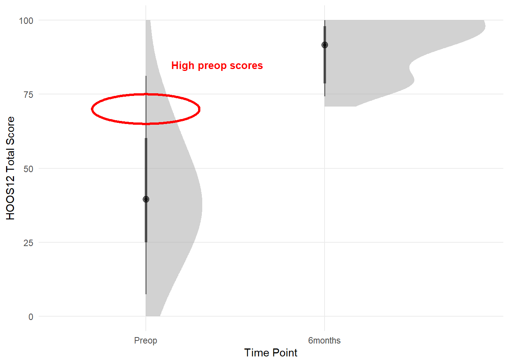